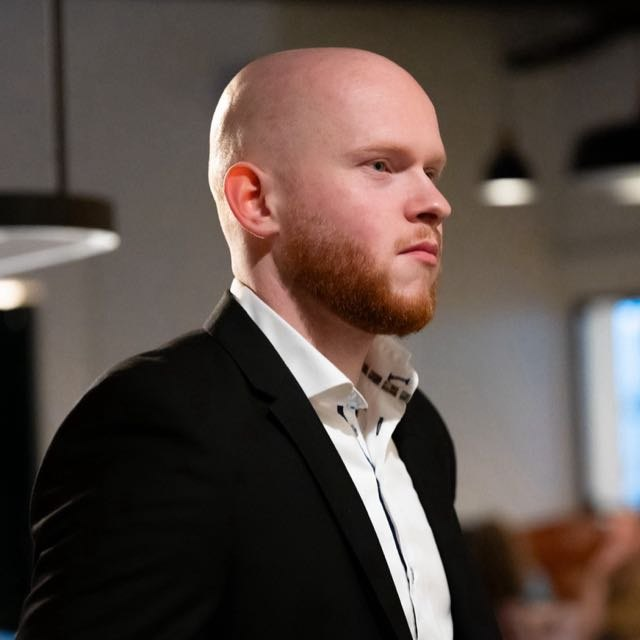

Bastiaan van der Horst
Data & Marketing Intelligence Specialist
Profiel
Data & Marketing Intelligence Specialist die ruwe data omzet in beslissingen die werken. Ik bouw liever een tool die een probleem permanent oplost dan het elke week handmatig aan te pakken: van ML-modellen en revenue attribution tot volledig geautomatiseerde pipelines. Daarnaast belegger in hart en nieren, met een eigen op data gebaseerde portefeuille.
Kerncijfers
+47,6%Organische groei YoY
€1.3MRevenue attributed
80xSneller dan handmatig
10u+Bespaard per week
+43%Beleggingsrendement YTD
14+Productietools gebouwd
Werkervaring
Data & Marketing Intelligence Specialistmrt 2025 — heden
FOV Friesche Olie- en Verfhandel · Leeuwarden
Als enige data specialist een volledig marketing intelligence platform opgezet in Python: ML-modellen, revenue attribution, concurrentieanalyse en automatisering van 10+ uur werk per week. Dagelijks gebruikt door management.
MKB Adviseur Klantenserviceaug 2024 — mrt 2025
Rabobank (via DPA Professionals) · Utrecht
MKB-klanten geadviseerd over financiële producten en digitaal bankieren. Klantanalyses in Siebel CRM voor upsell- en cross-sell-kansen.
Eigenaar / Founderjun 2020 — jun 2023
BeLion Sportswear · Harlingen
E-commerce sportswear merk opgezet. Google Ads, SEO en Python-automatisering voor feed-optimalisatie en competitor tracking.
Leidinggevende / Weekendmanageraug 2021 — mei 2024
Poiesz Supermarkten · Friesland
Leiding aan teams van ~30 medewerkers over meerdere filialen. 3 collega's opgeleid tot sleutelhouder.
Opleiding
HBO Commerciële Economie
NHL Stenden Hogeschool · Leeuwarden
Minors: Beleggen · Marketing Communicatie & Content Marketing
Wft Basis
Certificaat financiële dienstverlening
Finance & Beleggen
Eigen portefeuille, actief beheerd op basis van fundamentele en technische analyse (+43% YTD, +57% all-time). Deel mijn aanpak via het Instagram-kanaal "Beleggen met Bastiaan".
Technische vaardigheden
PythonPandas/NumPyscikit-learnSQL / BigQueryGA4Google Search ConsoleGoogle Ads APILooker StudioStreamlitPlaywrightGitSEO/SEARevenue AttributionFundamentele Analyse
Geselecteerde projecten
Marketing Intelligence Suite — Python-pipeline (GSC/GA4/Ads) met ML-forecasting en €1.3M revenue attribution.
FOV Ads Autopilot — Read-only Google Ads-analyse die wekelijks campagnes doorlicht en adviezen genereert.
Gap Intelligence Suite — Zelfgebouwde SEO-concurrentieanalyse zonder Ahrefs/SEMrush.
Product Automatisering — AI-contentgeneratie: 5.000+ producten in 4 uur, 99% kostenreductie.
Portfolio Monitor — Lokale 19-agent Python-pipeline voor dagelijkse portefeuilleanalyse (open source).
Volledig overzicht met cijfers en code: bastiaanvdh.github.io/portfolio